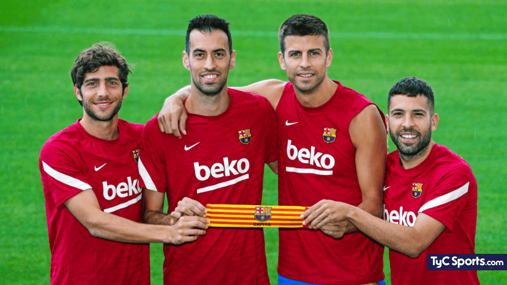
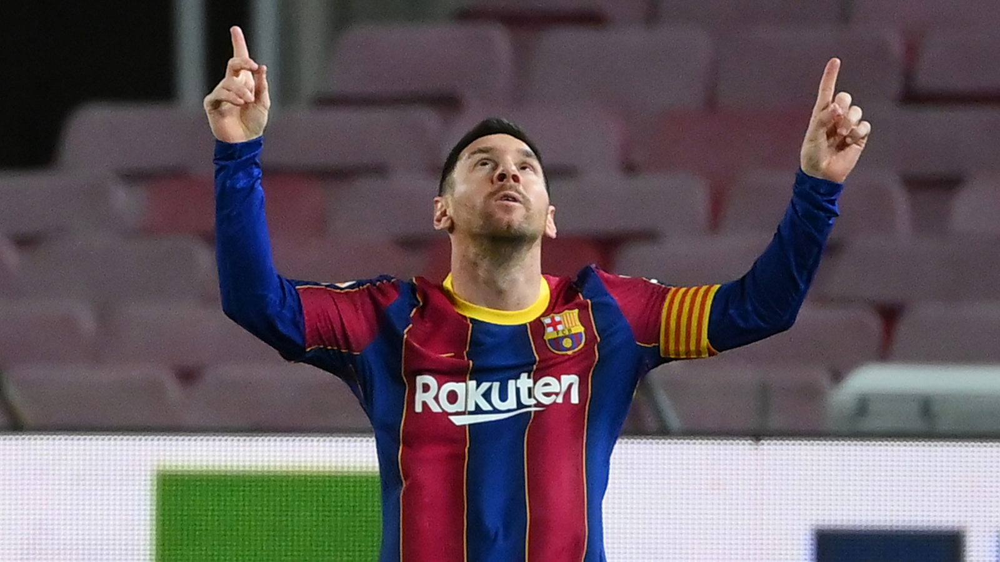

El Futbol Club Barcelona es uno de los clubes de fútbol más grandes e históricos del mundo, fundado en 1899 por un grupo de jóvenes futbolistas liderados por el suizo Hans Gamper. Desde entonces, el club ha acumulado numerosos títulos y desarrollado una reputación como un equipo de juego hermoso y ofensivo. A lo largo de su historia, el Barcelona ha superado muchos desafíos y ha evolucionado para convertirse en uno de los equipos más populares y exitosos del mundo, con una base de aficionados leales en todo el mundo.

Con su talento, pasión y dedicación, Messi ha dejado una huella indeleble en la historia del Barcelona. Durante sus 21 años en el club, Messi ganó 35 títulos, incluyendo 10 Ligas, 7 Copas del Rey y 4 Ligas de Campeones de la UEFA. Además, se convirtió en el máximo goleador de la historia del club, con un total de 672 goles en 778 partidos.
Pero sus logros van mucho más allá de las estadísticas. Messi ha sido una inspiración para millones de aficionados en todo el mundo, con su habilidad en el campo y su humildad fuera de él. Su legado en el Barcelona siempre será recordado y celebrado, y aunque se ha ido, su espíritu y su impacto seguirán vivos en cada partido y en cada aficionado del Barça. Messi es y siempre será historia en el Barcelona.